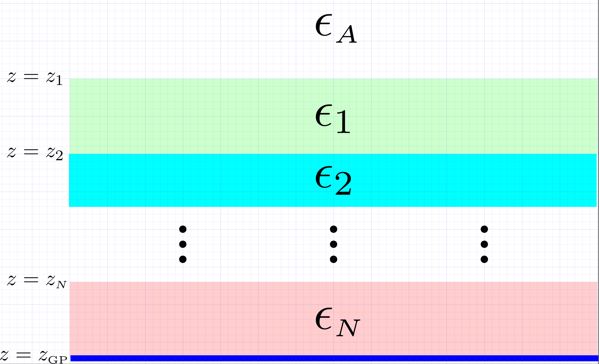
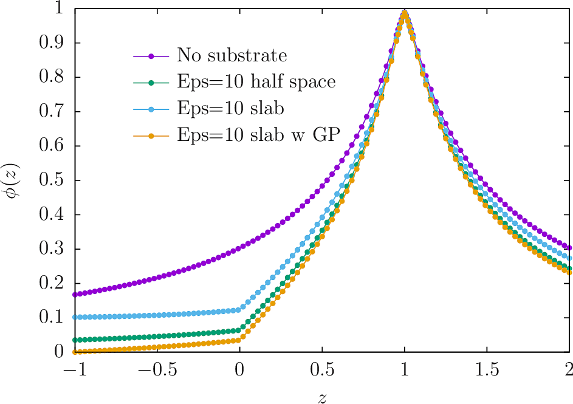

Implicit treatment of layered dielectric substrates in scuff-static
In this example, we exploit scuff-static's ability to handle multilayered material substrates implicitly---with no explicit meshing of substrate layers required---to allow highly efficient modeling of the electrostatics of complex-shaped metallic traces on printed circuit boards.
The input files for the calculations discussed here
may be
found in the share/scuff-em/examples/ImplicitSubstrate subdirectory
of your scuff-em installation.
Also, the mathematical techniques involved are discussed in this memo.
Layered substrates in scuff-em: The .substrate file
Layered substrates in scuff-em consist of zero or more planar material layers, of arbitrary user-specified thicknesses and permittivities, optionally terminated by a perfectly-conducting ground plane. All layers are infinitely extended in the x and y directions.

As is clear from this figure, an N-layered substrate is fully specified by giving, for layers n=1,2,...,N,
- , the -coordinate of the upper surface of the th layer
- , the permittivity of the th layer
together with
- an optional specification of the -coordinate of the terminating ground plane, if present
- an optional specification of the dielectric function of the ambient (or "above") medium, if it is not vacuum.
This information is specified to scuff-em in the form
of a simple text file conventionally given the file extension .substrate.
Each line of this file [blank lines and comments (lines beginning with #)
are ignored] describes one of the following items:
(a) a single layer in a multilayered substrate, specified by the z-coordinate of its upper surface and a scuff-em material designation, or
(b) the permittivity of the ambient (above) medium (if not
vacuum) specified by the keyword MEDIUM followed by a
scuff-em material designation, or
(c) the z-coordinate of the optional ground plane followed by
the keyword GROUNDPLANE.
Examples of .substrate files
- An infinite dielectric half-space of relative permittivity =10 occupying the region :
0.0 CONST_EPS_10
- A finite-thickness (1 length unit) slab of suspended in space with vacuum above and below:
0.0 CONST_EPS_10
-1.0 VACUUM
- A finite-thickness (1 length unit) slab of terminated below by a ground plane:
0.0 CONST_EPS_10
-1.0 GROUNDPLANE
- An alternating stack of silicon dioxide and silicon layers above an infinitely-thick slab of silicon:
0.0 SIO2
-0.1 SILICON
-0.2 SIO2
-0.3 SILICON
Running scuff-static calculations with implicit substrates: The --substrate option
To run electrostatics calculations in the presence of a multilayer
dielectric substrate described by the file MySubstrate.substrate,
simply add the option --substrate MySubstrate.substrate
to the scuff-static command line.
You may set the environment variable SCUFF_SUBSTRATE_PATH
to define a colon-separated list of directories in which
to search for .substrate files. (The current working
directory is always searched first.)
First computational example: Electric fields near a charged metallic plate
In this simple example, I consider a small finite-size metallic plate maintained at a constant potential of +1V in the vicinity of
(a) no substrate
(b) an infinite dielectric half-space of relative permittivity filling the lower half-space
(c) a finite-thickness (thickness one length unit) slab of relative permittivity filling the lower half-space
(d) a finite-thickness slab of lying atop a ground plane.
Input files for this example may be
found in the share/scuff-em/examples/ImplicitSubstrate subdirectory
of your scuff-em installation..
The bash script I use to run this example is
RunScript:
#!/bin/bash
CODE=scuff-static
ARGS=""
ARGS="${ARGS} --geometry Square_40.scuffgeo"
ARGS="${ARGS} --potentialfile PotentialFile"
ARGS="${ARGS} --EPFile EPFile.Fields"
${CODE} ${ARGS} --filebase None
for SUBSTRATE in E10HalfSpace E10SlabGP E10Slab
do
${CODE} ${ARGS} --substrate ${SUBSTRATE}.substrate --filebase ${SUBSTRATE}
done
This computes the electrostatic potential and fields along a line
of evaluation points at fixed coordinates running from
(above the plate) to (the ground plane)
and passing through the plate at and the dielectric interface
at .
The results are plotted in
gnuplot by saying load Plotter.Fields,
where Plotter.Fields is this script.

Take-home messages:
-
The potential rises to at the location of the plate ().
-
In the presence of the substrate, the potential exhibits a kink at the air-substrate interface () that is absent for the "No substrate" curve.
-
In the presence of the implicit ground plane at , the potential properly tends to zero at (yellow curve).